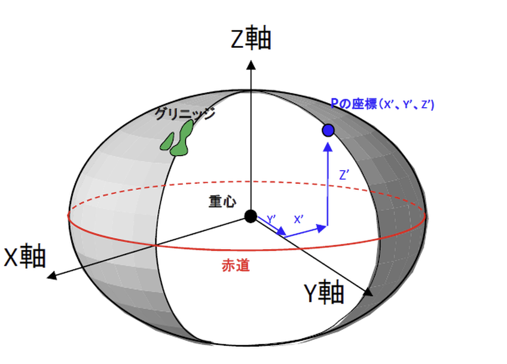

第7回 地理空間情報の基礎¶
GISの仕組みとGeoPandasの第一歩
🎯 本日の到達目標¶
GISの基本的な仕組み（レイヤー構造） を、具体的なビジネスや社会課題解決の例と結びつけて説明できる。
「地理座標系（経緯度）」と「投影座標系（平面）」の違い を理解し、地図が歪む理由を説明できる。
代表的な地図データ形式（Shapefile, GeoJSON）の特徴と用途、およびShapefileのファイル破損の罠を回避できる。
GeoPandas（ジオパンダス） ライブラリを読み込み、位置情報が含まれるデータ（Geometry列）を操作・条件抽出してプロットできる。
Point（経度, 緯度）の順番ルール を正確に守り、プログラム上での位置情報の取り扱いに関するバグを自力でデバッグできる。
練習問題のGoogle Colab起動¶

上記の「Open In Colab」をクリックして、Google Colabを起動させてください
[ファイル] → [ドライブにコピーを保存] を選択して、Googleドライブにコピーを保存してください
保存が成功すると，Googleドライブの「マイドライブ」 →「Colab Notebooks」にコピーしたファイルが保存されます。
GoogleドライブにコピーしたGoogle ColabのNotebooksを開いてください
開いたGoogle ColabのNotebooksで作業をしてください
GIS（地理空間情報システム）とは何か？¶
地図は「パンケーキの重ね合わせ」である¶
GIS（地理空間情報システム）とは、一言で言えば「地球上にあるあらゆるモノや出来事の位置情報を、 コンピュータ上で重ね合わせて分析・視覚化するシステム」です。 最も重要な概念が、地図を複数の「レイヤー（層）」に切り分けて管理するということです。
パンケーキに例えてみましょう！
一番下のパンケーキ：「地形・道路・河川（土台のレイヤー）」
その上のホイップクリーム：「カフェや避難所の位置（点データのレイヤー）」
その上のイチゴ：「ハザードマップの浸水想定エリア（面データのレイヤー）」
その上のシロップ：「時間帯別の人流・人口密度のデータ（動的なデータレイヤー）」
これらをコンピュータの中で1枚に「綺麗に重ね合わせる（オーバーレイ）」ことで、 「川の近くで、人通りが多く、浸水のリスクが少ない場所に、新しく店舗を出店する、あるいは避難所を新設するにはどこが最適か？」 という高度な都市計画やビジネス分析が、一瞬でできるようになります。
【GISのレイヤー構造（イメージ図）】
[ レイヤー 4: 店舗 ] 🍒 カフェの位置（点データ：Point）
│
[ レイヤー 3: 道路 ] 🛣️ 道路や鉄道路線（線データ：LineString）
│
[ レイヤー 2: 行政区 ] 🟩 地区区画や浸水エリア（面データ：Polygon）
│
[ レイヤー 1: 地形 ] 🗺️ 背景の白地図（ベースマップ）
━━━━━━━━━━━━━━━━━━━━━━━━━━━━━
【ガッチャンコ！】 ＝ 1枚の便利な「防災マップ」や「ビジネスエリア分析マップ」の完成！
空間データの表し方：ベクタデータ と ラスタデータ¶
コンピュータが地図の形を覚える方法には、大きく分けて「ベクタ（Vector）」と「ラスタ（Raster）」の2つの型があります。
1. ベクタデータ（幾何学データ）¶
位置を「座標（数値）」の組み合わせで表す方法です。
特徴：どれだけ地図を拡大（ズームイン）しても、輪郭がカクカクしたり、ぼやけたりせず、常にシャープで綺麗な線が描かれます。データサイズも小さくて済みます。
種類：
点（Point）：店舗、駅、避難所の場所（1組の [緯度, 経度] ）。
線（LineString）：道路、線路、河川（点の並び
[[x1,y1], [x2,y2]...]）。面（Polygon）：豊島区、東京都、日本国、浸水エリア（始点と終点が繋がった閉じたエリア）。
2. ラスタデータ（グリッド画像データ）¶
地図を細かな「マス目（ピクセル）」の集合体として、写真のように表す方法です。
特徴：人工衛星から撮影した地表の写真（航空写真）や、気象庁の降雨レーダー画像（アメダス）など、グラデーションや複雑な色彩を表現するのに適しています。ただし、ズームインすると「ピクセル（モザイク）」が目立ち、ぼやけます。
【ベクタ（滑らか） vs ラスタ（マス目）の比較】
【ベクタデータ（Vector）】 【ラスタデータ（Raster）】
(点・線・面で記録) (ピクセルの集まりで記録)
╱ ░ ░ █ ░ ░
╱ ░ █ ░ █ ░
╱ █ ░ ░ ░ █
(どれだけ拡大しても滑らか！) (拡大するとギザギザになる！)
データ分析やビジネス分析では、主に集計や距離計算が圧倒的に得意な「ベクタデータ（点・線・面）」をメインに使用します。
丸い地球をどうやって平らにする？¶
地球は丸い？
【地球のイメージ（ジャガイモ）】
{kind=link}
地球時と地心座標時
{kind=link}

地球の形状と大きさの定義 －ジオイドと地球楕円体－¶
地球は山や谷など凹凸が存在し、このままの形状を基準とすると非常に複雑になります。そのため地球の凹凸をシンプルな形状にモデル化する必要があります。

地図投影法¶
3 次元空間に存在している地球をそのままの形で平面上に表現することはできません。つまり、曲面を持つ地球を平面状の地図で表現するためには、地球表面の情報を平面に投影する処理が生じます。そのための手法を「地図投影法」と呼びます。

測地系と座標系¶
測地系：地球上を楕円形にとらえた上で、地球上の位置と経緯度を対応させる基準のことです。
座標系：数値による位置の表し方を指します。経度と緯度で表現される地理座標系と、それ以外の方法（球体を平面に変換するなど）の方法で表現される投影座標系の2種類が存在します。
一般的に球体を平面にすると、面積・角度・距離を同時に正しく投影させることはできません。
地理座標系（丸い地球を「角度」で表す）¶
地球は、実は完全な球体ではなく、自転の遠心力で少し横に潰れた「楕円体」をしています。 この丸い地球上の場所を示すために、地球の中心からの「角度」を使って場所を表す仕組みを地理座標系（Geographic Coordinate System: GCS）と呼びます。
緯度（Latitude）：赤道を0度とし、北（北緯）に90度、南（南緯）に90度まで測る角度（Y軸）。
経度（Longitude）：イギリスの旧グリニッジ天文台を通る線を0度（本初子午線）とし、東（東経）に180度、西（西経）に180度まで測る角度（X軸）。
世界共通で使われている代表的な地理座標系が 「WGS84」 という世界測地系です。 皆さんのスマートフォンに入っているGPSや、Google Mapsも標準ではこのWGS84（経度・緯度の角度データ）です。
投影座標系（丸い地球を無理やり「平面」にする）¶
地理座標系のデータ（度単位）のままでは、データ分析において非常に困ったことが起きます。
「店舗から駅まで何メートル？」
「この公園の面積は何平方メートル？」 という計算をするのが、地球が丸いために非常に難しくなるのです。
そこで、丸い地球を「無理やり引っ張って平らな紙に投影（印刷）」し、単位を「度（角度）」から「メートル（長さ）」に変換した仕組みを投影座標系（Projected Coordinate System: PCS）と呼びます。
ここで、おいしい「みかんの皮」を想像してください。 丸いみかんの皮を、破いたり引き伸ばしたりせずに、机の上に「完全な平らな四角形」として広げることはできますか？ 絶対にできませんよね。どうしても途中で破けてしまうか、皮のどこかをググッと引き伸ばさないと、平らな四角形にはなりません。
【投影のイメージ（みかんの皮）】
丸いみかん（地球：角度） 平面に広げた皮（世界地図：メートル）
╭━━━━━╮ ┌───────────────┐
┃ ● ┃ ──投影(flatten)─▶ │ ● (歪み) │
╰━━━━━╯ └───────────────┘
「角度は正確！」 「距離や面積が不自然に引き伸ばされる！」
{kind=link}
このように、丸い球体を平らな平面に投影するときには、必ず「面積」「距離」「角度」のどれかが犠牲（歪む）になります。
メルカトル図法：
世界地図でおなじみ。角度が正しいため大航海時代に船の羅針盤で多用されました。
ただし、北極や南極に近づくほど面積が異常に引き伸ばされるため、ロシアやグリーンランドが実物より何倍も巨大に描かれる（面積の歪みが極大）というデメリットがあります。
Googleマップ¶
Googleマップで利用されているウェブメルカトルという投影法では、北極・南極にいくほど巨大になるように表現されており、カナダやロシア、グリーンランド、南極大陸などを分析するには不向きであると言えるでしょう。

日本国内の正確な投影：平面直角座標系¶
「日本国内で、面積や距離を1cmの狂いもなく正確に測定・分析したい」という場合、地球全体をカバーするメルカトル図法を使うと、歪みが大きすぎて使えません。
そこで、国土交通省の特別の機関である国土地理院は日本を南北に細長く19のエリアに分割し、それぞれのエリアの「中心の基準点（原点）」付近だけを平らにして、歪みを極限までゼロに抑える特別な投影系を作りました。これを「平面直角座標系（JGD2011）」と呼びます。
第9系（EPSG:6677）：東京、神奈川、千葉、埼玉などの「関東エリア」を正確に測るための平面メートル座標系。関東を分析する時は、常にこの座標系に変換（プロジェクション）して、メートル単位で計算します。
EPSGコード（European Petroleum Survey Group）¶
様々な測地系や投影法に対して割り振られたユニークな番号のことです
EPSGコードの種類¶
代表的なものは以下となります
| EPSGコード | 測地系 | 座標系 |
|---|---|---|
| 6668 | JGD2011 | 地理座標系 |
| 4326 | WGS84 | 地理座標系 |
| 3857 | WGS84 | Webメルカトル |
EPSGコードとは
地球上の位置を表す座標参照系（CRS）に一意に割り当てられた世界共通の識別番号（ID）です
地理空間データの代表的なファイル形式¶
実務のデータ分析で遭遇する、地図データの代表的なファイル形式を2つ覚えましょう。
Shapefile（シェープファイル：.shp）の「3つで1つ」の罠¶
Shapefileは、アメリカのESRI社が開発した、GISの世界における「超定番（長老）」のファイル形式です。 官公庁のオープンデータや市区町村の境界線は、現在もほぼこの形式で配布されています。
【最大の罠：.shp だけでは動かない！】
「都道府県のデータが欲しいので、prefecture.shp というファイルだけを送ってください」
これは絶対にやってはいけない致命的なミスです！
Shapefileは、実は1つのファイルではなく、「同じ名前の複数のファイルがセットになっており、同じフォルダ内にセットで存在する」構成となっています。
.shp：位置の「形（ジオメトリ：点・線・面）」が保存されているファイル。.dbf：各図形に関連づけられた「属性データ（名前や人口などの表データ）」が保存されているファイル。.shx：位置と属性データを素早く検索するための「インデックス」ファイル。.prj*（推奨）：その地図データが「どの座標系（WGS84か、平面直角座標系か）」で作られているかを記録したファイル。これが無いと地図がどこにプロットされるべきか迷子になります。
【Shapefileの内部構造（イメージ図）】
同じフォルダ内：
├── 📂 tokyo_map.shp (形データ：PointやPolygon)
├── 📂 tokyo_map.dbf (属性データ：人口や店舗名などのエクセル表) 👈 すべてセットで1つ！
├── 📂 tokyo_map.shx (検索用の接着剤) どれが欠けてもエラーで死ぬ！
└── 📂 tokyo_map.prj (座標系の案内紙: EPSG番号など)
※ Shapefileを他人に送る時や、Colabにアップロードする時は、.shp だけでなく、.dbf や .shx などすべてのセットをZIPファイル等に固めて一緒に扱う必要があります。
GeoJSON（ジオジェイソン：.geojson）¶
Webアプリやプログラミングの世界におけるメインとなる形式です。 中身は、「JSON（辞書形式のテキスト）」を拡張しただけのシンプルなテキストファイルです。
特徴：
1つのファイル（
.geojson）の中に、形データも属性データも座標系情報もすべて美しく収まっています。テキストデータなので、Pythonで開きやすく、Webブラウザの地図アプリとも非常に相性が良いです。
GeoPandasの導入¶
Pythonコードを動かして、地図空間データを操作してみます Pandasはエクセルのような表データを扱いましたが、GeoPandas（ジオパンダス）は、その表の中に「形や位置情報（Geometry：ジオメトリ）」の列を1つ追加した、地図分析・可視化ライブラリです。
通常のPandasの文法（.head(), groupby, 条件抽出 df[df[...] == ...]）が、そのまま使えるます。
Google Colabの環境構築¶
Google Colabには標準でGeoPandasが入っていますが、時々バージョンの不整合で可視化の際に赤いエラーが出ることがあります。まずは環境を安全に整えるために、以下の「おまじない」セルを実行しましょう。
# （準備）地図データの日本語化ライブラリ、geodatasetsとGeoPandasのインポート
!pip install -q japanize-matplotlib
!pip install -q geodatasets
import geopandas as gpd
import geodatasets
import matplotlib.pyplot as plt
import japanize_matplotlib
print("GeoPandasのインポートに成功しました！")
print("GeoPandasバージョン:", gpd.__version__)
世界地図データの読み込みと描画¶
練習用の「世界地図データ（世界各国の境界線ポリゴン）」を読み込みます。
Natural Earthデータ¶
Natural Earth は、商用・非商用問わず誰でも無料で自由に利用できる、パブリックドメインのオープンな世界地図データセット
主な特徴
無料かつ自由な利用: パブリックドメインで提供されているため、クレジット表記や許可なしに商用・非商用を問わず自由に使用・改変できます。
3つの縮尺（スケール）: 1:10m（詳細）、1:50m（中縮尺）、1:110m（小縮尺・全体）の3つの異なるスケールでデータが用意されており、用途に合わせた使い分けが可能である。
豊富なデータ種類: 海岸線や国境などの政治的データ（Cultural）と、山や川、海洋などの自然的データ（Physical）が、ベクター形式（ポイント・ライン・ポリゴン）やラスター形式（地形陰影など）で揃っている。
Cultural（文化的要素）: 国境線（Admin 0）、都道府県・州境（Admin 1）、都市、道路など
Physical（物理的要素）: 海岸線、湖、河川、島など
Raster（ラスタデータ）: 地形に陰影をつけた画像データなど
GISソフトとの高い親和性: QGIS や ArcGIS、各種プログラミング言語（PythonのGeoPandasやRなど）の地図作成・地理空間情報の可視化で広く活用されている。
# 世界地図データを読み込む
backup_url = "https://raw.githubusercontent.com/homata/musashiuniv/master/data/ne_110m_admin_0_countries.zip"
world = gpd.read_file(backup_url)
# カラム名を小文字にする
world.columns = world.columns.str.lower()
# 後位互換の為に変更する
if 'gdp_md_est' not in world.columns and 'gdp_md' in world.columns:
world = world.rename(columns={'gdp_md': 'gdp_md_est'})
display(world.head(3))
print("\n--- 世界地図データのデータフレーム（DataFrame） ---")
display(world.head(3))
通常のPandasと全く同じ表形式ですが、一番右端に geometry（ジオメトリ） という列があります。
ここに MULTIPOLYGON（複数の多角形：国境線で囲まれた面）などの位置情報がギッシャーリ詰まっています。
この world に対して、.plot() メソッドを呼び出すだけで、GeoPandasが自動的に幾何学座標を計算し、一瞬で世界地図を描画してくれます
# 世界地図をプロット
fig, ax = plt.subplots(figsize=(12, 6))
# world.plot() に ax(描画キャンバス) を指定してプロットします
world.plot(ax=ax, color='lightgreen', edgecolor='white')
# グラフ（地図）の装飾
plt.title("GeoPandasで描いた世界地図")
plt.xlabel("経度 (Longitude)")
plt.ylabel("緯度 (Latitude)")
plt.grid(True, linestyle='--', alpha=0.5)
plt.show()
特定のエリアだけを切り出す（Pandasの知識の応用）¶
continent（大陸名）が "Asia"（アジア）の国だけを抽出して、アジアだけの部分地図にしてみます。
# アジア大陸の国だけを条件抽出
asia_countries = world[world["continent"] == "Asia"]
# 画面に表の一部を表示して確認
print(f"アジア大陸の国々の数: {len(asia_countries)} ヶ国")
display(asia_countries[["name", "gdp_md_est", "geometry"]].head(3))
# アジア地図のプロット
fig, ax = plt.subplots(figsize=(10, 6))
# color=塗りつぶしの色, edgecolor=国境線の色
asia_countries.plot(ax=ax, color='skyblue', edgecolor='darkblue')
plt.title("アジア大陸の国々の分布")
plt.xlabel("経度")
plt.ylabel("緯度")
plt.grid(True, linestyle=':', alpha=0.6)
plt.show()
練習問題（5問）¶
練習問題 1: GISのレイヤー概念¶
GISで、地図を「道路」「店舗」「河川」といった異なる情報の層に切り分けて重ね合わせて分析する仕組みのことを、英語で何と呼ぶでしょうか？ また、拡大しても形が一切劣化しない「点・線・面」の幾何学データの種類を何と呼ぶでしょうか？
👉 練習問題 1 の解答と解説を見る
正解：
地図を重ね合わせる層の仕組み：「レイヤー（Layer）構造」
劣化しない幾何学データ：「ベクタ（Vector）データ」
解説：
地図は、1枚の巨大な絵として管理されているのではなく、「ベース地図」「道路」「建物」といった透明なシート（レイヤー）をコンピュータ上で何層も重ね合わせる（オーバーレイ）ことで、自由な分析を可能にしています。
拡大するとギザギザにぼやける写真は「ラスタデータ」であり、数値（座標）で形を管理し、何倍に拡大しても滑らかなままの図形データを「ベクタデータ」と呼びます。
練習問題 2: 座標系とみかんの皮の罠¶
地球の形をそのまま「角度（経度・緯度）」で表現した座標系を ( A ) 座標系と呼びます。
丸い地球を無理やり平らに引き伸ばし、単位を「メートル（長さ）」に直して距離や面積を計りやすくした座標系を ( B ) 座標系と呼びます。
日本国内の特定のエリア（例えば関東地域など）を歪みほぼゼロで正確に測定するために、日本を19地域に分割して定義された平面座標系を ( C ) と呼びます。 空欄(A), (B), (C)に入る適切な用語の組み合わせを答えてください。
👉 練習問題 2 の解答と解説を見る
正解：
( A ) = 地理（ちり）座標系
( B ) = 投影（とうえい）座標系
( C ) = 平面直角座標系（JGD2011）
解説：
GPSなどで使われる「経度・緯度（WGS84など）」は地理座標系であり、単位は「度」です。
みかんの皮を広げるように、無理やり平らにしてメートル単位にしたものが投影座標系です。
日本独自の、狭い地域ごとに歪みを完全に封じ込めた投影系が、国土地理院の定める平面直角座標系（関東地域は「第9系：EPSG:6677」など）です。
練習問題 3: Shapefileの「長老」問題¶
自治体からShapefile形式の避難所データをダウンロードしてGoogle Colabで開こうとしたが、どうしてもエラーが起きて読み込めない。
確認したところ、Google Colabのフォルダの中に shelter.shp というファイルだけが単体でアップロードされていました。
「何が原因で、どうすれば解決するか」を考えてください。
👉 練習問題 3 の解答と解説を見る
正解：
「原因」：Shapefile（シェープファイル）は
.shpだけでは動きません。図形の中身（属性データ）を記録した.dbfや、検索用インデックスの.shxなどの異なる拡張子のファイルが同じ名前でセットになって初めて動く「3つで1つ」のルールがあるからです。「解決策」：自治体の配布サイトからダウンロードしたZIPファイルを一度パソコンで解凍し、中に入っている
.shp,.dbf,.shxなどのファイルをすべてセットで同じGoogle Colabのフォルダにアップロード（またはZIPごとアップロードして解凍）してください。
解説：
Shapefileをやり取りする時は、必ず「複数ファイルがセットで同じ名前でフォルダに入っているか」を確認をします。
練習問題 4: 地図上の Point 定義における「全人類共通の罠」¶
Pythonの地図幾何学ライブラリ（shapely）を使って、経度 139.75 度、緯度 35.68 度（皇居付近）の位置にピンを立てるため、以下のコードを書きました。
point = Point(35.68, 139.75)
このコードには、実行したときに全く見当違いの場所（例えば南極の近くや、海の上）に位置がズレてしまう致命的なバグが潜んでいます。 このバグの原因と、正しいコードの書き方を答えてください。
👉 練習問題 4 の解答と解説を見る
正解：
バグの原因：Pointを定義する際は、日常会話の「緯度・経度」の順番ではなく、数学のグラフと同じ
Point(経度, 緯度)（ X軸 = 経度, Y軸 = 緯度 ） の順番で渡す必要があるから。正しいコード：
point = Point(139.75, 35.68)
解説：
「緯度経度」という表現から、
Point(緯度, 経度)と書いてしまい、日本の皇居のはずが「経度35.68度（サウジアラビア付近）、緯度139.75度（南極大陸付近）」にピンが表示されます。「Pointは X, Y の順。X軸は横に動く『経度』、Y軸は縦に動く『緯度』！」と覚えてください
練習問題 5: GeoPandasの「crs」属性¶
GeoPandasで読み込んだ地理空間データフレーム（GeoDataFrame）が、現在「世界測地系WGS84（経緯度：度単位）」なのか「平面直角座標系（メートル単位）」なのかを、プログラム上で確認したいです。
データフレームが gdf という名前のとき、座標参照系情報を取得・確認するためのプロパティ（属性）は何でしょうか？
👉 練習問題 5 の解答と解説を見る
正解：
gdf.crs解説：
データフレーム名の後に
.crs(Coordinate Reference System: 座標参照系) を添えて実行するだけで、現在の座標参照系が「EPSG:4326（WGS84）」なのか「EPSG:6677（平面直角座標9系）」なのかといった詳細なシステム情報を一瞬で確認できます。
💻 演習（5問）¶
準備¶
地図データの日本語化ライブラリ、geodatasetsとGeoPandasのインポート
!pip install -q japanize-matplotlib
!pip install -q geodatasets
import geopandas as gpd
import geodatasets
import matplotlib.pyplot as plt
import japanize_matplotlib
print("GeoPandasのインポートに成功しました！")
print("GeoPandasバージョン:", gpd.__version__)
世界地図データを読み込む
backup_url = "https://raw.githubusercontent.com/homata/musashiuniv/master/data/ne_110m_admin_0_countries.zip"
world = gpd.read_file(backup_url)
# カラム名を小文字にする
world.columns = world.columns.str.lower()
# 後位互換の為に変更する
if 'gdp_md_est' not in world.columns and 'gdp_md' in world.columns:
world = world.rename(columns={'gdp_md': 'gdp_md_est'})
display(world.head(3))
print("\n--- 世界地図データのデータフレーム（DataFrame） ---")
display(world.head(3))
演習¶
演習 1: ヨーロッパ（Europe）大陸の切り出しと地図描画¶
これまでの世界地図データフレーム world から、「continent」が「Europe」の国々だけを条件抽出し、国境線を「黒色（black）」、塗りつぶしを「オレンジ色（orange）」にした、美しいヨーロッパの地域地図を描画してください。
# TODO: 1. continent が Europe の国だけを抽出し、df_europe に代入する
df_europe =
# 地図の描画（ここを埋めて完成させてください）
fig, ax = plt.subplots(figsize=(10, 8))
# TODO: 2. df_europe を、国境線を「black」、塗りつぶしを「orange」にして ax 上にプロットする
df_europe.plot( )
# グラフ（地図）の装飾
plt.title("ヨーロッパ諸国の地域地図")
# ヨーロッパ周辺が見えやすいように経緯度の表示範囲（ズーム）を指定します
ax.set_xlim(-25, 45) # 経度の範囲
ax.set_ylim(34, 72) # 緯度の範囲
plt.grid(True, linestyle=":", alpha=0.5)
plt.show()
👉 演習 1 の解答コードを見る（クリックで展開）
# 1. ヨーロッパの条件抽出
df_europe = world[world["continent"] == "Europe"]
# 地図の描画（ここを埋めて完成させてください）
fig, ax = plt.subplots(figsize=(10, 8))
# 2. 地図の描画設定
df_europe.plot(ax=ax, color='orange', edgecolor='black')
# グラフ（地図）の装飾
plt.title("ヨーロッパ諸国の地域地図")
# ヨーロッパ周辺が見えやすいように経緯度の表示範囲（ズーム）を指定します
ax.set_xlim(-25, 45) # 経度の範囲
ax.set_ylim(34, 72) # 緯度の範囲
plt.grid(True, linestyle=":", alpha=0.5)
plt.show()
演習 2: 世界の「人口が少ない国（ワースト5）」のデータ抽出とソート¶
データフレーム world の中から、人口（pop_est）が「1人以上（0人を省くため）」の国を対象とし、人口が「少ない順（昇順）」に並び替えた際の上位5ヶ国を抽出してください。
抽出したデータフレームの「name（国名）」、「pop_est（推計人口）」、「geometry（形）」の3つの列だけを画面に表示してください。
# TODO: 1. 人口（pop_est）が 1 以上の国だけを条件抽出して df_valid_pop に代入する
df_valid_pop =
# TODO: 2. 人口（pop_est）の少ない順（昇順：ascending=True）でソートする
df_sorted =
print("--- 人口が極めて少ない国ワースト5 ---")
# TODO: 3. 国名、推計人口、geometry 列だけを選択し、先頭の5行を表示する
display(df_sorted[ ].head(5))
👉 演習 2 の解答コードを見る（クリックで展開）
# 1. 人口1人以上の抽出
df_valid_pop = world[world["pop_est"] >= 1]
# 2. 人口の昇順でソート
df_sorted = df_valid_pop.sort_values(by="pop_est", ascending=True)
# 3. 指定列の表示
display(df_sorted[["name", "pop_est", "geometry"]].head(5))
演習 3: 新設避難所3箇所の緯度・経度からのPoint作成¶
あなたの地域に、新しく3つの「新設避難所」ができることになりました。 それぞれの避難所の名前と緯度・経度情報は以下の通りです。
避難所A：東経 139.670、北緯 35.735
避難所B：東経 139.682、北緯 35.741
避難所C：東経 139.658、北緯 35.729
Pythonの shapely.geometry.Point を使い、この3つの緯度経度から「全人類共通の罠（指定の順番）」を正しく回避して、正しいPointオブジェクトのリストを作成してください。
# TODO: 1. shapely.geometry から Point をインポートする
from
# TODO: 2. 各避難所の緯度経度からPointを作成する（指定順に魂を込めて注意！）
point_A =
point_B =
point_C =
# リストにまとめます
point_list = [point_A, point_B, point_C]
print("作成された避難所Pointデータ:")
for p in point_list:
print(p) # Point (139.xxx, 35.xxx) と経度が左、緯度が右に出ていれば成功！
👉 演習 3 の解答コードを見る（クリックで展開）
# 1. Pointのインポート
from shapely.geometry import Point
# 2. Pointの作成（経度がX軸、緯度がY軸なので 139.xxが最初になります）
point_A = Point(139.670, 35.735)
point_B = Point(139.682, 35.741)
point_C = Point(139.658, 35.729)
# リストにまとめます
point_list = [point_A, point_B, point_C]
print("作成された避難所Pointデータ:")
for p in point_list:
print(p) # Point (139.xxx, 35.xxx) と経度が左、緯度が右に出ていれば成功！
演習 4: 避難所データベースの新規地理データフレーム（GeoDataFrame）化¶
演習3で作成した「3つのPoint（位置データ）」と、それぞれの「備蓄食料数（Food_Stock）」が格納された辞書データがあります。
これをもとに、GeoPandasの gpd.GeoDataFrame() を用いて、初期の座標参照系（CRS）を世界測地系である 「WGS84 (EPSG:4326)」 に設定した、新しい地理データフレーム df_new_shelter を新規作成してください。
import geopandas as gpd
from shapely.geometry import Point
# 避難所Pointリスト
point_list = [Point(139.670, 35.735), Point(139.682, 35.741), Point(139.658, 35.729)]
# 辞書データ
raw_dict_data = {
"避難所名": ["新設A館", "新設B館", "新設C館"],
"備蓄食料": [1200, 1500, 800],
"geometry": point_list # 位置情報のリストを geometry という列名に配置します
}
# TODO: gpd.GeoDataFrame() を使い、辞書データ「raw_dict_data」を地理空間データフレームに変換する。
# その際、位置情報の列名を「geometry="geometry"」で指定し、
# 初期座標系（crs）を世界測地系 WGS84 である "EPSG:4326" に定義してください。
df_new_shelter =
print("--- 新設避難所地理データフレーム ---")
display(df_new_shelter)
print("現在のデータ型:", type(df_new_shelter)) # GeoDataFrame と表示されれば正解
print("定義された座標系(CRS):", df_new_shelter.crs) # EPSG:4326
👉 演習 4 の解答コードを見る（クリックで展開）
import geopandas as gpd
from shapely.geometry import Point
# 避難所Pointリスト
point_list = [Point(139.670, 35.735), Point(139.682, 35.741), Point(139.658, 35.729)]
# 辞書データ
raw_dict_data = {
"避難所名": ["新設A館", "新設B館", "新設C館"],
"備蓄食料": [1200, 1500, 800],
"geometry": point_list # 位置情報のリストを geometry という列名に配置します
}
# TODO: gpd.GeoDataFrame() を使い、辞書データ「raw_dict_data」を地理空間データフレームに変換する。
# その際、位置情報の列名を「geometry="geometry"」で指定し、
# 初期座標系（crs）を世界測地系 WGS84 である "EPSG:4326" に定義してください。
df_new_shelter = gpd.GeoDataFrame(raw_dict_data, geometry="geometry", crs="EPSG:4326")
print("--- 新設避難所地理データフレーム ---")
display(df_new_shelter)
print("現在のデータ型:", type(df_new_shelter)) # GeoDataFrame と表示されれば正解
print("定義された座標系(CRS):", df_new_shelter.crs) # EPSG:4326
演習 5: 地理座標系から平面直角座標系（メートル座標）への投影変換¶
演習4で作成した df_new_shelter は現在、世界測地系である EPSG:4326 であり、位置情報の単位は「度（角度）」です。
これでは「避難所の周りに半径500mの円を描いて商圏を調べる」といったメートル単位の計算ができません。
GeoPandasの .to_crs() メソッドを用いて、関東地方のメートル単位の正確な平面直角座標系である 「平面直角座標系第9系（JGD2011：EPSG:6677）」に投影変換したデータフレーム df_shelter_meter を作成してください。
また、geometryの中身が Point (139.xxx, 35.xxx) という角度から、-xx, xxx, -xx, xxx のような大きなメートル値に変化したことを確認してください。
df_new_shelter = gpd.GeoDataFrame(
{
"避難所名": ["新設A館", "新設B館", "新設C館"],
"備蓄食料": [1200, 1500, 800],
"geometry": [Point(139.670, 35.735), Point(139.682, 35.741), Point(139.658, 35.729)]
},
crs="EPSG:4326"
)
# TODO: .to_crs() を使い、座標参照系を平面直角座標第9系 \"EPSG:6677\" に変換してください。
df_shelter_meter =
print("【変換前：世界測地系 (EPSG:4326)】 単位は『度』")
print(df_new_shelter["geometry"])
print("\n【変換後：平面直角座標第9系 (EPSG:6677)】 単位は『メートル』")
# geometryのPointの中身が、巨大なメートル数値（例: Point (-3142.23, -12423.44)等）に変化したか確認！
print(df_shelter_meter["geometry"])
print("\n変換後の新しい座標参照系(CRS):", df_shelter_meter.crs)
👉 演習 5 の解答コードを見る（クリックで展開）
df_new_shelter = gpd.GeoDataFrame(
{
"避難所名": ["新設A館", "新設B館", "新設C館"],
"備蓄食料": [1200, 1500, 800],
"geometry": [Point(139.670, 35.735), Point(139.682, 35.741), Point(139.658, 35.729)]
},
crs="EPSG:4326"
)
# TODO: .to_crs() を使い、座標参照系を平面直角座標第9系 "EPSG:6677" に変換してください。
df_shelter_meter = df_new_shelter.to_crs(epsg=6677) # もしくは .to_crs("EPSG:6677")
print("【変換前：世界測地系 (EPSG:4326)】 単位は『度』")
print(df_new_shelter["geometry"])
print("\n【変換後：平面直角座標第9系 (EPSG:6677)】 単位は『メートル』")
# geometryのPointの中身が、巨大なメートル数値（例: Point (-3142.23, -12423.44)等）に変化したか確認！
print(df_shelter_meter["geometry"])
print("\n変換後の新しい座標参照系(CRS):", df_shelter_meter.crs)
📚 まとめ¶
レイヤー構造：地図は「道路」「建物」といった透明なシート（トッピングケーキ）を重ねることでできており、コンピュータ上で自由にマージや条件分析ができる。
点・線・面（ベクタデータ）：拡大しても崩れないシャープな図形。それぞれ
Point,LineString,Polygonというデータ型でGeoPandasのgeometry列に保存される。座標系の歪み（みかんの皮）：地球は丸いため、平らにすると必ずどこかに歪みが出る。GPS等の経緯度を使う「地理座標系（度単位）」から、正確な「平面直角座標系（メートル単位：関東は
EPSG:6677）」に変換（.to_crs()）して計算を行うのがGIS分析の鉄則。Shapefileの罠：
.shpだけでは動かない。.dbfや.shxなど同じ名前の複数ファイルをセットで扱う「長老」ならではのルールを守ること。Point(経度, 緯度)の順：数学座標の
(X, Y)に基づくため、必ずPoint(経度, 緯度)の順で指定すること。